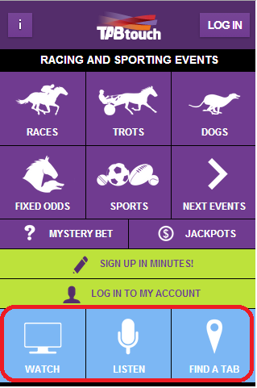
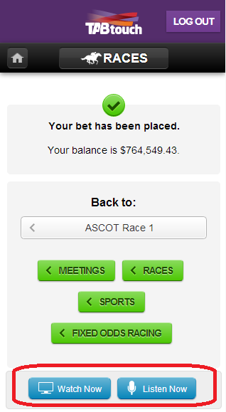

Icon Glossary
Meeting/Race Icons (TABtouch)
 Meeting or race is open for betting
Meeting or race is open for betting Meeting or race is closed for betting
Meeting or race is closed for betting Meeting or race is pending
Meeting or race is pending Meeting or race is abandoned
Meeting or race is abandoned- WAWA only
- INTPooled with International Partner
 Jackpot
Jackpot Guaranteed minimum pool size
Guaranteed minimum pool size Track information
Track information Fixed Odds betting is available
Fixed Odds betting is available Fixed Odds betting is currently not available
Fixed Odds betting is currently not available- Special is applicable
Starter Icons (TABtouch)
 Favourite runner
Favourite runner
Transaction Status
 Dividend
Dividend No dividend due
No dividend due Cancelled
Cancelled Withdrawal
Withdrawal Deposit
Deposit
Frequently Asked Questions — General
What mobile devices can I use?
These applications have been designed for smartphones that satisfy the following criteria:
- Large screen (ideally with a resolution of 480x320 or greater)
- Touch sensitive
- Fully-featured browser.
The following mobile devices are supported:
- iPhone 4 or later
- iPad
- Phones running Android 4.1 or later
The applications may work with other mobile devices, but this usage will be unsupported.
Why do I sometimes need to re-login?
For security reasons, the application will automatically log users out if left idle for a period of four hours. Provided that you access the application within this period you will not be required to log back in.
What happens if my phone loses its signal while submitting a bet?
If your phone loses it signal after you have pressed the final "Place Bet" and before you receive a bet confirmation with a ticket number, RWWA cannot guarantee that your bet was successfully placed.
We recommend you check the transaction page within "My Account". If the transaction is not listed then please contact our Customer Management Team on 1300 36 36 88 to confirm the bet status.
How can I protect my account if my phone is lost or stolen?
In addition to normal precautions, the following steps should be taken to protect your account in the event of a lost or stolen phone:
- Always log out of TABtouch when you have finished betting.
- If you are betting over an extended period of time and wish to remain logged in, you should activate your phone's lock code to prevent unauthorised access.
Why do I lose my selections when I press the browser refresh button?
The browser refresh button will cause a complete reload of the current page. Any user-entered data (e.g., bet selections) will be cleared.
TABtouch has a refresh button in the upper right corner. Pressing this button will allow you to obtain updated dividends and pool sizes while maintaining your selections.
Why does my browser back button not work?
Support for the browser back button relies on functionality that is not available in all browsers.
TABtouch provides a button in the top left corner that will allow you to return to the parent page of the current page. You can also navigate back to the landing page by clicking on the 'Home' icon or application icon.
Note that the browser back button should not be used during betting operations, as it will not retain user-entered data.
Do I need to have cookies enabled?
Yes, TABtouch uses cookies so you will need to have them enabled for the applications to function correctly. If you don't enable them you will receive an error message when you attempt to log on.
The deposit function does not let me enter a credit card.
You can only deposit money into your account if you have pre-registered your credit card details with RWWA. If you want to deposit money or pre-register your credit card, please contact the Customer Management Team on 1300 36 36 88.
My question isn't answered here, where can I get help?
Our Customer Management Team will be happy to help with your query. They can be contacted on 1300 36 36 88 or, alternatively, email ContactUs@tabtouch.com.au.
Restricted Country FAQ
Why am I receiving a restricted country error message if I'm located in Australia?
TABtouch uses information tied to your internet connection to determine the country in which you are located. This message indicates that you were present in a restricted country. This may be due to the use of anonymising tools or services such as Anonymising Proxies, Virtual Private Networks (VPN), Tor, Satellite Providers and Hosting Providers.
What are anonymising tools or services?
Anonymising tools or services hide your location or prevent your location from being determined. They include Anonymising Proxies, Virtual Private Networks (VPN), Tor, Satellite Providers and Hosting Providers. These services can be often be running on your phone or desktop computer without you realizing.
How do I know if my connection is using anonymising technology?
There are ways for determining if you’re using an anonymising tool or service. The approach to doing so varies according to the device you are using to access the internet. You may need to seek expert help to do so. For more assistance, call our customer service team.
FAQ — TABtouch
How do I change bet types?
Once you have navigated down to the list of starters for a particular race you will see the following text with a bet type button:

The bet type automatically defaults to Win and Place.
If you click anywhere on this button, you will be presented with a list of all bet types available for the selected race.
How do I find race results?
To find race results, navigate as usual to the required code, date and meeting. If the race number is highlighted in red and the text "Interim" or "Results" is displayed underneath the race distance then the race results are available.
Select the required race and you will be presented with the race results and dividends payable.
Why can't I place a Live Bet on TABtouch?
Current Federal Legislation prevents customers from transacting on Live Betting options via this application.
Live Betting markets can however be viewed by navigating to the "Live" section of the sports menu.
If you then wish to place a Live bet, please call 1300 BET LIVE (1300 238 548) or the Fixed Odds sports line on 13 23 68.
Where can I view sports and racing results?
The Fixed Odds results service is unavailable via TABtouch
Tote result information for Thoroughbred, Harness or Greyhound events can be sourced via TABTouch.com.au. For sport results, please call the Fixed Odds sports line on 13 23 68.
Vision
Vision is only supported on devices that support HTTP Live Streaming (HLS)
For the best results on android devices we suggest you update to the latest version of the Android OS
The HLS feed is delayed approximately 40 secs.
To avoid this delay you can also access the vision via your PC using www.tabtouch.com.au.
- Sky online does not have the rights to stream Thoroughbred racing vision from NSW or Victoria.
- Audio is available on races from NSW & VICTORIA but no vision.
- You can WATCH and bet at the same time unless you access TABtouch.mobi (browser) using your iPhone.
- Users may incur a data cost depending on the personal data plan in place.
- Racing vision is available to any logged in active TABtouch customers, that is a customer who has placed at least 1 bet on their TABtouch account in the previous 7 days
How to Access?
Vision and Racing Radio can be accessed from the home page by clicking the "Watch" and "Listen" buttons found at the bottom of the screen.

Or after you have placed a bet by clicking the blue "Watch" and "Listen" buttons on the receipt page.

Cash Betting
No account? No worries, on TABtouch you can pay with cash. TABtouch offers multiple payment methods so you can create your bets on your mobile and then either pay from anywhere using your TABtouch account or by using cash at any TAB outlet.
To use cash as your payment option first turn on Cash Betting in the My Bets menu. Then build your bet as normal, once you’ve entered your stake you have 2 payment options – Account or Cash. Choose the ‘Cash’ option and your bet will display as a barcode, which you can scan to place your bet at any TAB counter, Self Service or WA racecourse. To complete bet placement pay the TAB operator or insert your cash into the TAB Self Service. You will then receive your printed bet ticket as your receipt. If you are not ready to scan your bet straight away it will be saved for later, you can access all of your saved cash bets under the My Bets menu.
Cash Betting FAQ
Do I need to turn on cash betting every time I want to bet?
No, you only need to turn on cash betting once. It will then remain on as an option every time you use TABtouch or manually switch it off.
How many single bets can I place in one transaction?
Up to 10 single bets can be added to the Bet Slip to be placed in one transaction.
How many cash bets can I save?
Up to 100 cash bets can be saved to your device and any one time.
Can I scan a barcode more than once?
Yes, a barcode can be scanned multiple times to place the same bet more than once.
I have received my barcode, does this mean my bet has been placed?
The barcode is not a placed bet. In order for the bet to be placed, the barcode must be scanned and paid for at a TAB facility. You will then receive a printed bet receipt.
Will my barcode be automatically deleted once the bet has been placed?
No, your barcodes do not automatically delete from your device once scanned and bets placed.
Please be aware that if you do not delete your barcode once you have scanned it and betting is still open on those events, you might inadvertently rescan the same bet again, thereby producing another ticket requiring payment.
Fixed Odds Rules
Please download the Fixed Odds Rules (PDF).
International Pooling Rules
South African Betting Rules
Key points where the South African betting rules differ from the SuperTAB betting rules are as follows:
- There are a maximum of 20 runners allowed in a race.
- The Win pool will jackpot if the winner is unbacked.
- For the Place pool:
- Minimum starters is 6
- A dividend is paid for the 4th place getter if there are 16 or more starters
- 3 place dividends will be paid when there are 8, 9, 10, 11, 12, 13, 14 or 15 starters
- 2 place dividends will be paid when there are 6 or 7 starters
- If there are less than 6 starters, the pool is refunded
- The Place pool will jackpot if all place getters are unbacked.
For full details of the South African betting rules refer to TABtouch Help.
Singapore Betting Rules
Key points where the Singapore betting rules differ from the SuperTAB betting rules are as follows:
- Dividends are rounded down to the nearest 20c.
- For the Win pool:
- Minimum dividend is $1.06
- Minimum starters is 4
- If the winner is unbacked, a countback is performed to the second placegetter and third placegetter, if required. If both the second and third placegetters are unbacked, the Win pool is refunded.
- For the Place pool:
- Minimum dividend is $1.02
- Minimum starters is 4
- 3 place dividends will be paid when there are 7 or more starters.
- 2 place dividends will be paid when there are 4, 5 or 6 starters.
- If there are less than 4 starters, the pool is refunded
Note: Singapore Turf Club may choose to lower the takeout rate applying to any individual Win pool after the pool has opened for selling and before betting closes. For full details of the Singapore betting rules refer to TABtouch Help.
New Zealand Betting Rules
Key points where the New Zealand betting rules differ from the SuperTAB betting rules are as follows:
- For the Quinella pool:
- If the winning combination of the first and second placegetter is unbacked, a countback is performed to first and third placegetter and then, if that is not backed, to second and third placegetter. If both these combinations are unbacked, the Quinella pool is refunded less any commissions.
For the full details of the New Zealand betting rules refer to TABtouch Help.
Agency Locations
For security purposes, TAB outlets are not contactable by telephone. Any queries related to specific outlets should be directed to TAB Head Office on (08) 9445 5333.
For a complete list of TAB outlets and their locations, please consult www.tabtouch.com.au
Legal
Important Notice
The material displayed on this site including all information, text, graphics, software, advertisements, names, logos and trademarks is protected by copyright, trade mark and other intellectual property laws unless indicated otherwise.
You must not modify, copy, reproduce, publish or distribute this material in any way without the prior written approval of RWWA.
The use of scraper tools or any other form of automated data mining or screenscraping technology is not permitted and may constitute a criminal offence in certain circumstances in some Australian jurisdictions.
Electronic addresses are published on this website for professional communications only and do not constitute an invitation to send unsolicited commercial e-mails which are not related to this business.
This site contains links to third party sites. These third party sites are not maintained or controlled by RWWA. To the extent permitted by law, RWWA accepts no liability and provides no warranty in respect of the information displayed on those sites. RWWA does not endorse that information or any party associated with it and you link to any such site entirely at your own risk.
You agree to indemnify and hold harmless RWWA and all of its officers, directors, employees, agents, licensors and suppliers from and against all losses, expenses, damages, costs resulting from the use by you of this site.
Current Copyright Acknowledgements
© 2011 Racing Information Services Australia Pty Ltd (RISA) (and other parties working with it). Racing materials, including fields, form and results are subject to copyright which is owned by RISA and other parties working with it.
© 2011 Racing NSW (RNSW) (and other parties working with it). NSW racing materials, including fields, form and results are subject to copyright which is owned by RNSW and other parties working with it.
© 2011 Racing Victoria Limited (RVL) (and other parties working with it). VIC racing materials, including fields, form and results are subject to copyright which is owned by RVL and other parties working with it.
© 2011 Racing Queensland Limited (RQL) (and other parties working with it). QLD racing materials, including fields, form and results are subject to copyright which is owned by RQL and other parties working with it.
© 2011 Racing and Wagering Western Australia (RWWA) (and other parties working with it). WA racing materials, including fields, form and results are subject to copyright which is owned by RWWA and other parties working with it.
© 2011 Thoroughbred Racing SA Limited (TRSA) (and other parties working with it). SA racing materials, including fields, form and results are subject to copyright which is owned by TRSA and other parties working with it.
© 2011 Tasracing Pty Ltd (TR) (and other parties working with it). TAS racing materials, including fields, form and results are subject to copyright which is owned by TR and other parties working with it.
© 2011 Thoroughbred Racing NT (TRNT) (and other parties working with it). NT racing materials, including fields, form and results are subject to copyright which is owned by TRNT and other parties working with it.
© 2011 Canberra Racing Club Inc (CRC) (and other parties working with it). ACT racing materials, including fields, form and results are subject to copyright which is owned by CRC and other parties working with it.
Terms and Conditions
General
This Racing and Wagering Western Australia ('RWWA') wagering account is provided to you on the terms and conditions which follow. The account facilities which RWWA will give you under these terms and conditions include the ability to obtain information about dividends on races and other events by calling 1300 36 36 88 (local call cost) or the www.TABtouch.com.au website.
Please read the following terms and conditions carefully. By making the declaration on the account application form, you acknowledge that you have read and fully understood these terms and conditions and that you agree with RWWA to abide by each of them. Your account is provided for the purpose of wagering and must be used for its intended purpose.
- You must not open or use a wagering account if you are under 18 years. You warrant that you are at least 18 years old and you will not permit any person under the age of 18 to use your account.
- You agree to comply with the RWWA Act 2003 and Regulations, Rules of Racing and Rules of Wagering made under that Act in so far as they relate to the opening and use of a wagering account and to ensure that neither you nor anyone else conducts wagering through the account that breaches the above laws or any other law, including the betting or anti-gambling laws, rules or regulations of a sporting authority recognised by RWWA in relation to a sporting event. (This legislation can be viewed on the RWWA website: www.rwwa.com.au).
- A maximum of two persons per account is permitted. In the event this account is held in joint names, for all operational purposes, the account will be 'either to operate'. Any restrictions to the account will apply to both parties. For the purpose of mail outs and/or EFT withdrawals account holder 1 will be the recipient.
- Prohibited Jurisdictions
- You acknowledge that due to the laws of the following countries, RWWA cannot allow the residents of those countries (the "Prohibited Jurisdictions") to open TAB accounts: American Samoa, Aruba, Belgium, Bonaire, Saint Eustatius and Saba, Brazil, Czech Republic, China, Curacao, Denmark, France, French, Guiana, French Polynesia, French Southern Territories, Germany, Guinea, Hong Kong, Hungary, India, Indonesia, Iran, Ireland, Italy, Luxembourg, Macau, Mexico, Netherlands, North Korea, Pakistan, Paraguay, Poland, Portugal, Russian Federation, Saint Kitts and Nevis, Singapore, Sint Maarten, South Korea, Spain, Sweden, Taiwan, Turkey, U.S. Virgin Islands, United Arab Emirates, United Kingdom, United States of America, Vietnam.
- Other countries may be added to the Prohibited Jurisdiction list (or removed from it) in accordance with changes in foreign laws.
- You agree that you will not make any transactions using your TAB account while residing in a Prohibited Jurisdiction.
- RWWA reserves the right to reject any transactions made from a Prohibited Jurisdiction, or where RWWA cannot determine the location of the bet due to technologies such as VPN/Hosted Services/TOR networks
- Restricted Jurisdictions
- In accordance with its commercial agreements, RWWA will not accept pari-mutuel bets from residents of the following jurisdictions: South Africa, New Zealand, Canada, Isle of Man RWWA will accept other forms of betting such as Fixed Odds Bets from Restricted Jurisdictions.
- Other countries may be added to the Restricted Jurisdiction list (or removed from it) in accordance with changes in commercial arrangements.
- You agree that you will not make any pari-mutuel transactions using your TAB account while residing in a Restricted Jurisdiction.
- RWWA reserves the right to reject any transactions made from a Restricted Jurisdiction, or where RWWA cannot determine the location of the bet due to technologies such as VPN/Hosted Services/TOR networks
- RWWA may refuse to accept a wager placed by you and may close this account at any time, without giving a reason. RWWA will not be liable if access to the account ceases or is temporarily disrupted.
- You must ensure that your account number, withdrawal code and internet password remain secret and are not stored together. You must not permit any person other than a joint account holder to place wagers or otherwise access your wagering account. You release RWWA from any liability in respect of transactions made by persons other than you or a joint account holder on your wagering account.
- RWWA's records are deemed to be a true and correct record of all transactions on your wagering account. RWWA will not accept records produced by you as evidence of any such transactions.
- To the extent permitted by law you indemnify RWWA and its agents and employees against any loss, expense or claim suffered or made by any person which results from use of this account contrary to these terms and conditions.
- You warrant that all information provided by you to RWWA by whatever means is true and correct. You must immediately notify RWWA of any change in the information.
- Subject to RWWA's privacy statement, you agree to the use and disclosure by RWWA, if permitted under the privacy statement, of any information about you or provided by you to RWWA.
- By using the RWWA internet wagering web sites to conduct wagering or otherwise access your account, you agree to any terms and conditions set out on the RWWA Web Site at the time of use.
- You agree that RWWA may record telephone conversations with you when you use any telephone wagering line or other phone line connected with your account.
- If there is any inconsistency between these terms and conditions and any Privacy Statement, Freedom of Information Statement or similar document issued by RWWA (whether before or after you agree to these terms and conditions), these terms and conditions will prevail.
- RWWA may vary these terms and conditions at any time without providing a reason. Any variations to the terms and conditions will be updated immediately, please refer to RWWA or TABtouch websites for the current terms and conditions. You will be taken to agree to such variation by placing a wager with the account.
Credit Cards
- Only MasterCard or VISA is accepted for credit card transactions.
- The credit card nominated must be in the same name as the RWWA account.
- Only one credit card can be registered against each account and only that card will be recognized by the system.
- The minimum daily account deposit is $20 and the maximum deposit is $500, unless extended limits have been approved.
- There is no limit on the number of credit card account transactions per day, within the maximum deposit limit.
- Requests can be made to have the limit lifted between $501 and $1000 by contacting the Customer Management Team on 1300 36 36 88 or email contactus@tabtouch.com.au. A copy of the front of the Credit card and customer's driver's licence must be sighted by the Customer Management Team for limits above $501. Please block out the CVC Code. Requests with a copy of the card can be sent by scanning or taking a photo to contactus@tabtouch.com.au, via email, fax or post.
- Deposits to your account with a credit card cannot be withdrawn as cash.
- No fees for credit card deposits to TABtouch accounts are applied by RWWA. Please check with your bank if fees are applicable.
- RWWA reserves the right to determine the acceptance of credit card transactions from any customer.
To meet our obligations under the AML/CTF Act 2006:
- We will verify your identity before providing certain services to you, and may seek to re-identify you if we consider it necessary (by law) to do so.
- By completing this application you consent to RWWA providing personal information to a credit reporting agency to verify your identity, specifically the name, address and date of birth listed on this application. This consent will allow RWWA to only verify an individual's identity as required by the Anti-Money Laundering and Counter-Terrorism Financing Act 2006 for all new TABtouch account applications.
- We may from time to time ask you to provide photographic identification in order to obtain certain services
- We may from time to time ask you to provide additional personal information in order to obtain certain services.
- We may block your account temporarily until you have complied with our request for additional information.
- We may refuse some services should you choose not to comply with our requests.
- Where required by law we may disclose your information to regulatory or law enforcement agencies, including the Australian Transaction Reports and Analysis Centre (AUSTRAC), which is responsible for regulating the AML Act.
Identification and Verification
- After the age verification has been completed by the customer, the account can be used immediately to place bets and make deposits.
- The Anti-Money Laundering and Counter-Terrorism Financing Act 2006 ("the Act"), requires RWWA to verify your identity when you open an account with us.
- Your account will be blocked for withdrawals until the Signed Application Form and identification process has been completed.
- Your account will be closed if the Signed Application Form and Identification process has not been completed within 90 days from the day on which the account was opened.
- An account will only be reopened within a reasonable period of time after we have received the required identification documentation and/or Signed Application Form. We reserve the right to re-open your account at our discretion.
- We reserve the right to request further information from you ("Enhanced Customer Due Diligence") where we reasonably consider that either you or your account transaction history may represent a significant risk to our business and/or our exposure to risk under the Act.
- We reserve the right to close your account at any time and without notice to you where we reasonably consider that either you or your account transaction history may represent a significant risk to our business and/or our exposure to risk under the Act.
- In order to assist us to make this assessment, we may disclose your personal information to third parties, such as, but not limited to, law enforcement agencies, both in Australia and overseas and "World Check" assessment services.
Freedom of Information and Privacy Policy
RWWA is established under the RWWA Act 2003. Being a state authority RWWA is specifically excluded from the provisions of the Privacy Act 1988 (Cth) and as such, RWWA is not bound by the National Privacy Principles.
Notwithstanding this, RWWA understands that its customers value their privacy and expect their affairs to be kept confidential. On this basis, RWWA's policy is to respect the confidentiality of customer information except where disclosure of the information is:
- Required or authorised under a written law;
- Made to a sporting authority recognised by RWWA to assist in connection with any investigation or other action conducted under the sporting authority's applicable betting or anti-gambling laws or rules for its sporting events;
- Required to be accessed by authorised persons in connection with any investigation or other action conducted under the rules of racing;
- Made for marketing or product development purposes and does not allow an individual customer to be identified; or
- In RWWA's opinion, necessary in order to prevent or minimise loss, damage or injury to RWWA or any other person.
The RWWA Act and Regulations will be used to adjudicate disputes, visit TABtouch.com.au or contact the Customer Management Team on 1300 36 36 88 for further information.
RWWA supports responsible wagering. Call 1800 858 858 or visit www.gambleaware.com.au for support.
Additional Information
Call Centre Bet Confirmation
The Call Centre representative will 'call back' (or repeat) the details of the bet that has been recorded every time you place a bet. It is important that you listen to the call back carefully and ask for any error to be corrected at that time. Once you have accepted the call back and ended the call, the bet is confirmed and cannot be changed or cancelled.
Freedom of Information and Privacy Policy
The RWWA Act and Regulations will be used to adjudicate disputes, visit tabtouch.com.au or contact the Customer Management Team on 1300 36 36 88 for further information.
RWWA supports responsible wagering. Call 1800 858 858 or visit www.gambleaware.com.au for support.
Responsible Wagering
RWWA is established under the RWWA Act 2003. Being a state authority RWWA is specifically excluded from the provisions of the Privacy Act 1988 (Cth) and as such, RWWA is not bound by the National Privacy Principles.
Notwithstanding this, RWWA understands that its customers value their privacy and expect their affairs to be kept confidential. On this basis, RWWA's policy is to respect the confidentiality of customer information except where disclosure of the information is:
- Required or authorised under a written law;
- Made to a sporting authority recognised by RWWA to assist in connection with any investigation or other action conducted under the sporting authority's applicable betting or anti-gambling laws or rules for its sporting events;
- Required to be accessed by authorised persons in connection with any investigation or other action conducted under the rules of racing;
- Made for marketing or product development purposes and does not allow an individual customer to be identified; or
- In RWWA's opinion, necessary in order to prevent or minimise loss, damage or injury to RWWA or any other person.
Additional Information
Call Centre Bet Confirmation
The Call Centre representative will 'call back' (or repeat) the details of the bet that has been recorded every time you place a bet. It is important that you listen to the call back carefully and ask for any error to be corrected at that time. Once you have accepted the call back and ended the call, the bet is confirmed and cannot be changed or cancelled.
Freedom of Information and Privacy Policy
The RWWA Act and Regulations will be used to adjudicate disputes, visit www.tabtouch.com.au or contact the Customer Management Team on 1300 36 36 88 for further information.
RWWA supports responsible wagering. Call 1800 858 858 or visit www.gambleaware.com.au for support.